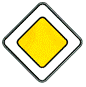

знак 2.1
Приложение 1 (дорожные знаки)
Закон Грузии «О дорожном движении» № 1830-რს, консолидированная редакция 25.06.2026 (Matsne, публикация 36). Юридическую силу имеет грузинский текст, русский — перевод. Источник: Matsne (рус.), Matsne (груз.).

Текст (рус., дословно)
2.1. «Главная дорога» – дорога, по которой движущемуся водителю предоставлено право преимущественного проезда на нерегулируемых перекрестках. Знак устанавливается в начале дороги и повторяется непосредственно перед каждым перекрестком. Знак 2.1 в сочетании с табличкой 8.13 устанавливается в населенном пункте перед перекрестком, на котором главная дорога меняет направление, вне населенного пункта – предварительно на расстоянии 150–300 метров до перекрестка и перед перекрестком.
Официальный текст (груз.)
2.1. „მთავარი გზა“ − გზა, რომელზე მოძრავ მძღოლსაც ენიჭება არარეგულირებული გზაჯვარედინის გავლის უპირატესობა. ნიშანი იდგმება გზის დასაწყისში და მეორდება უშუალოდ ყოველი გზაჯვარედინის წინ. 2.1 ნიშანი 8.13 დაფით დასახლებულ პუნქტში იდგმება გზაჯვარედინის წინ, რომელზედაც მთავარი გზა იცვლის მიმართულებას, დაუსახლებელ პუნქტში − წინასწარ გზაჯვარედინამდე 150−300 მეტრ მანძილზე და გზაჯვარედინის წინ.
Где это в курсе
Уроки
- Выпуск 3. Перекрёсток, прилегающая территория, главная дорога — разбирает, ссылается
Понятия курса
- Знак 2.1 «Главная дорога» — вводится в выпуске 3
Типичные ошибки
- «Знак 2.1 «Главная дорога» путают с другими знаками» — как правильно: Знак 2.1 даёт право преимущественного проезда нерегулируемых перекрёстков
- «Правило правой руки действует и там, где есть главная дорога» — как правильно: По главной дороге (знак 2.1) водителю предоставлено право преимущественного проезда нерегулируемых перекрёстков
Билеты, которые на неё ссылаются (3)
По ссылкам на закон в пояснениях базы (с учётом наших уточнений онтологии).
Ссылаются в законе
Постоянная ссылка: norm/sign-2.1.html